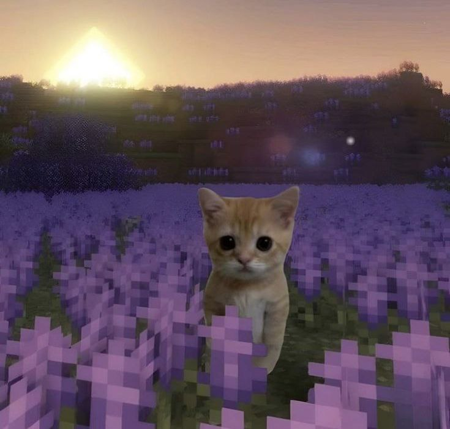
Введи кодовую дату:
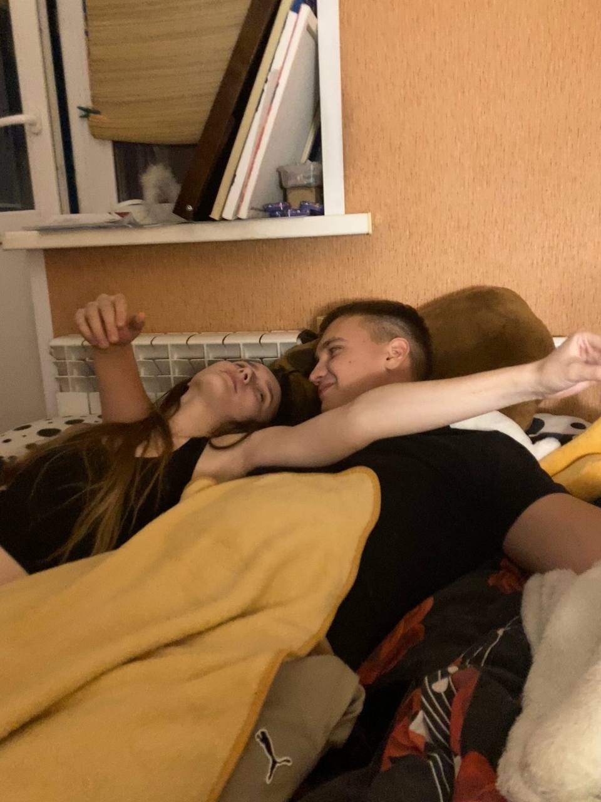
:фак, я посмотрела фотки
:че то меня немножко напрягает взгляд жени на них
:...
:проблемка тут больше другая
:мне он тоже симпатизирует нах
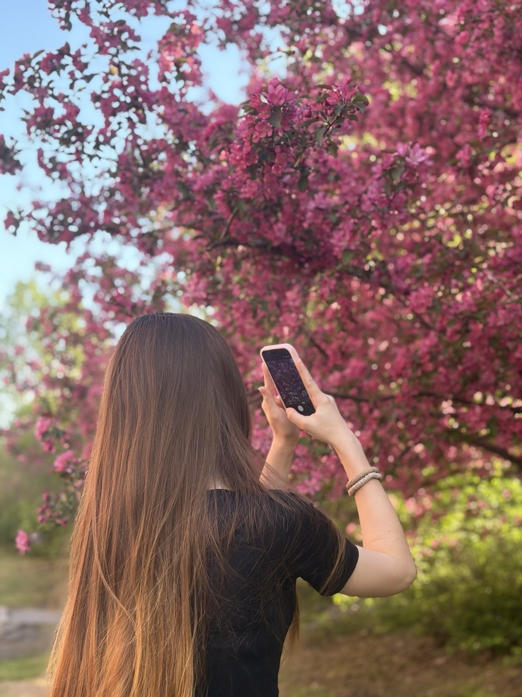
Пролетает день-другой,
Вновь увижусь я с тобой,
Снова встречусь, обниму,
Попрощаюсь, да пойду…
Помню была осень золотая
Начали дружить, с тобой гуляя.
Мы сидели, говорили…
Как-то, раз, и полюбили.
Пережили судны бури.
По сугробам, не спеша
Пробирались кропотливо
В место, где поет душа…
Мы работали усердно,
Тосковали - не беда,
Ведь стремимся с тобой верно
В место, где поет душа…
Где пылают струны скрипки,
Где басит виолончель,
Где гитара кропотливо
Струнами щекочет ель.
Все пройдем с тобою вместе.
В место, где царит покой
Доберемся с тобой вместе,
Чувствую своей душой.
Твои волосы, как волны,
Вновь окутают с утра…
А твой голос, словно ноты,
Вновь обрадует меня.
И тогда пойму я точно,
Что добились мы всего.
Что труды ведь наши, точно,
Не напрасны все-равно…
Я хочу чтоб знала, Слава,
Сильно дорожу тобой!
Что б не сделала, родная
Буду рядом я с тобой!
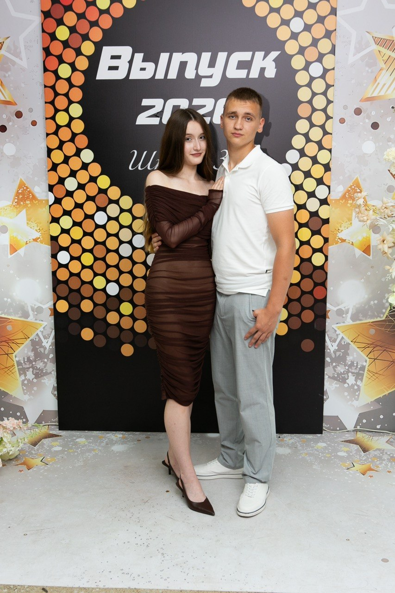
:Платье лицезреть хочу
:так у меня нет платьев
:Которое ты забрала
:не знаю таких
:Та я ж точно помню, что оно у иебя есть
:лживое воспоминание
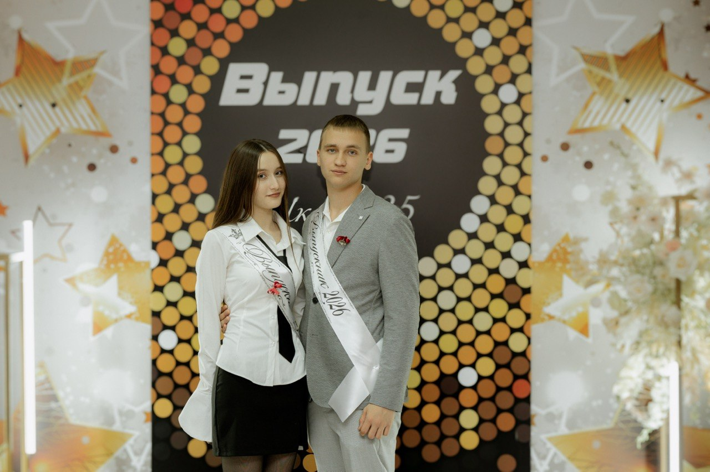
:история у нас не из легких
:Зато одна из интересных
:Я верю, что это не случайно...
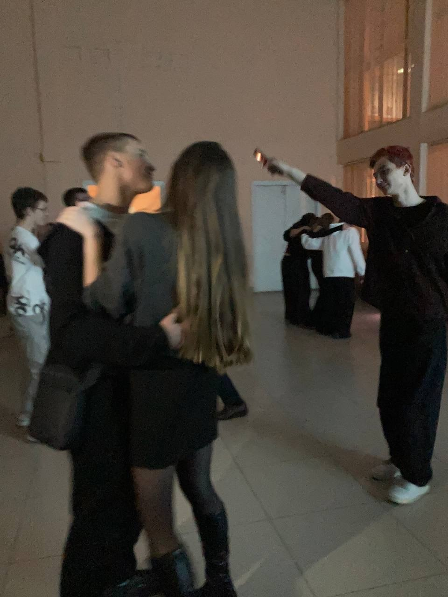
:Крч подведем завершение: ч тебя люблю, выслушаю,
пойму ваще мне пох. Если вдруг начинаешь сомневаться
в себе, мой тг всегда для тебя открыт, пиши звони, говори
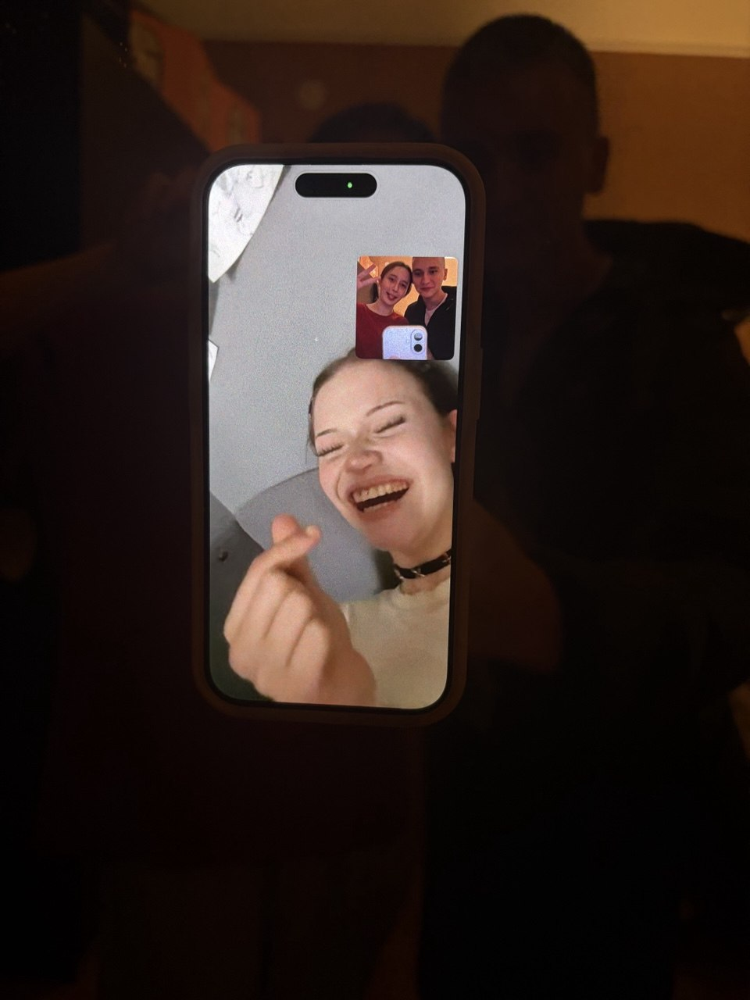
:СУКА КАК ТЯНЕТ НАПИСАТЬ «ПОРА ДЕЛАТЬ СЕМЕЙНОЕ ФОТО ВТРОЕМ»
:блин такое настроение хорошее
:И у меня
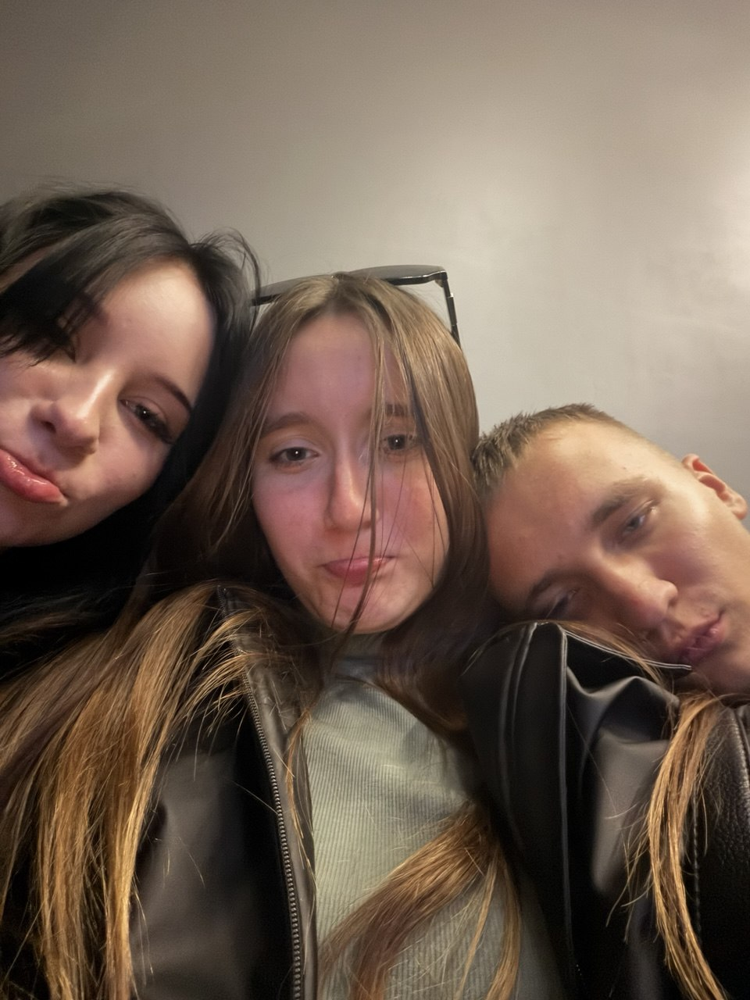
:меня чо та вайбит куда то сходить все таки
:Куда ток
:вот этот папа лаундж вроде не плохо
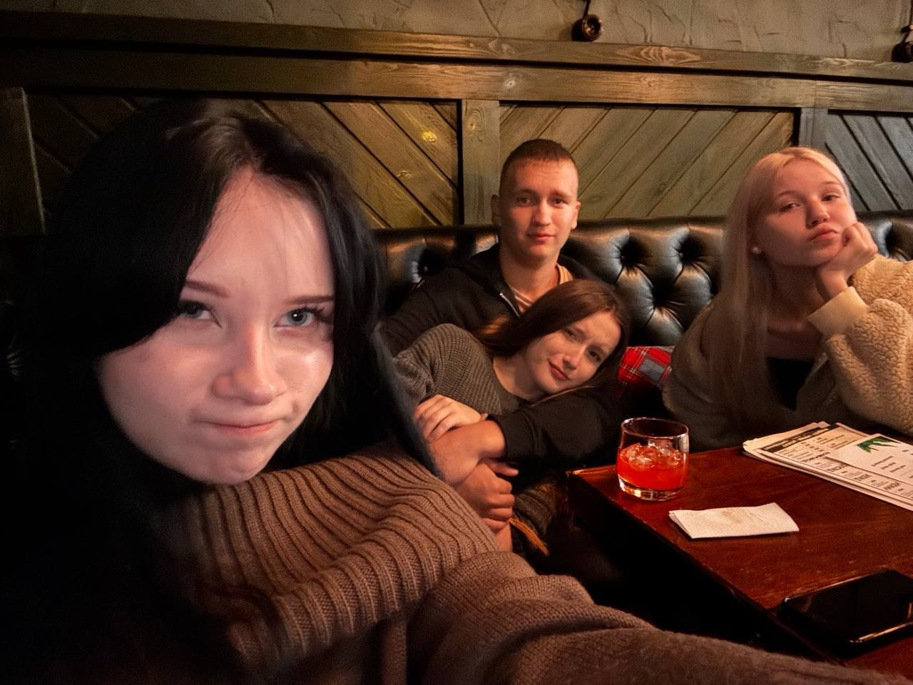
:короче друзья
:мне сказали что harat’s и клевер заебатые пабы
:Залетаем
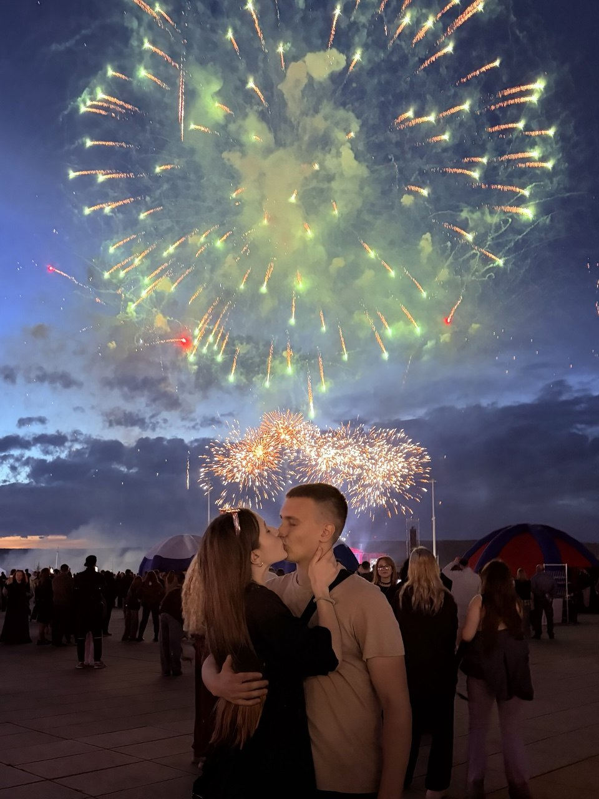
:Бля, думаю, на салют еще идти але не идти
:та как по кайфу
:Посмотрим к вечеру
:ну вот, пральна!
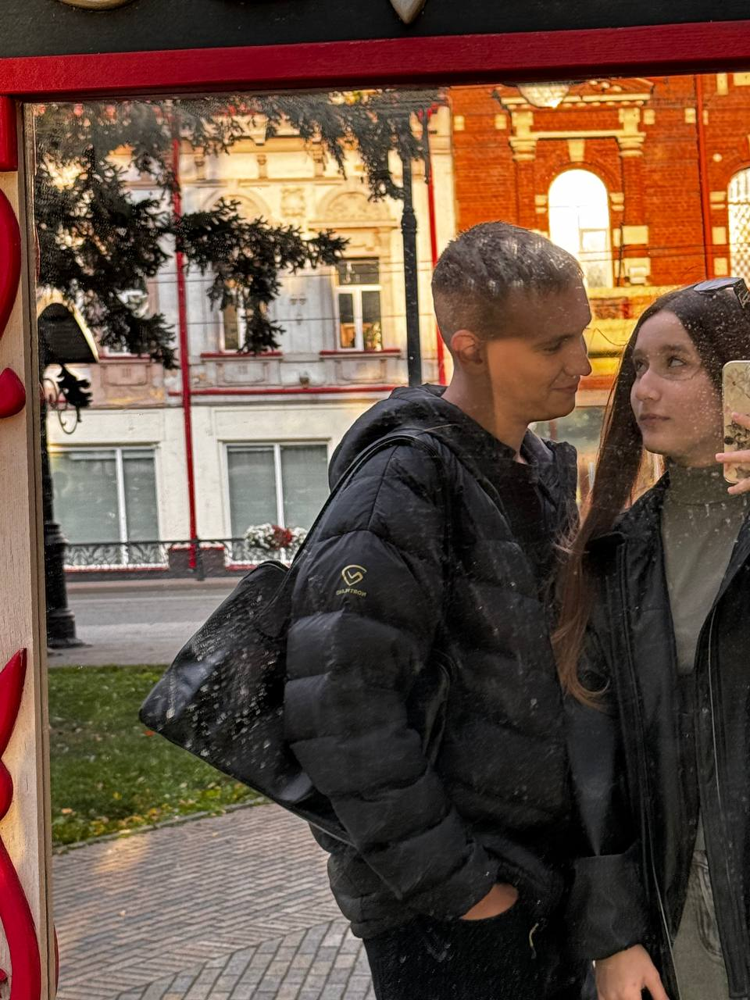
:Гламурненько
:из-за сумочки??
:Канешна